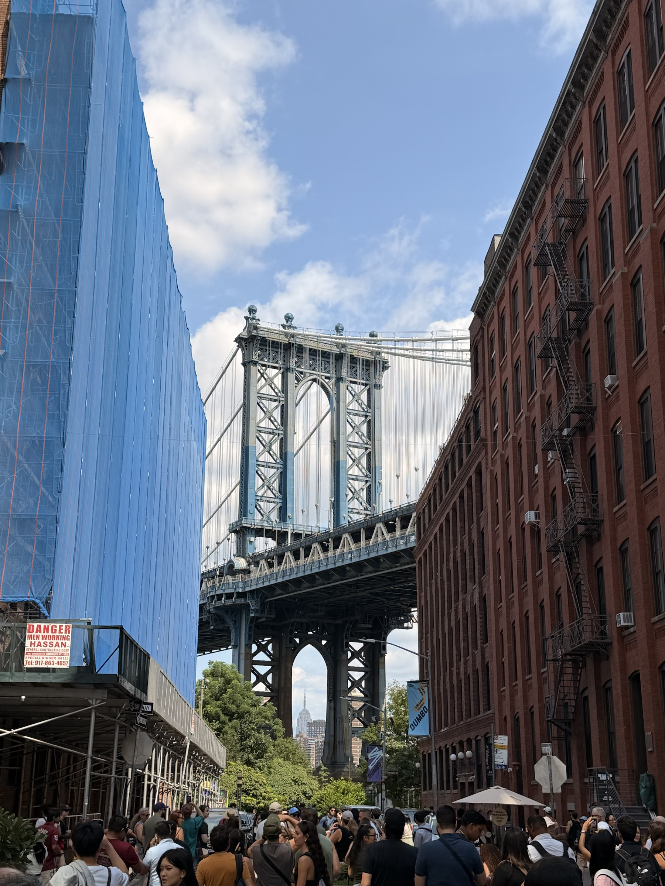
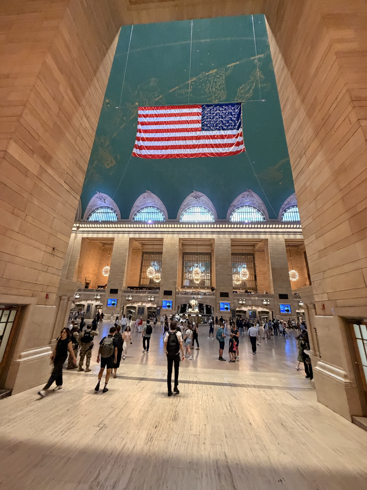
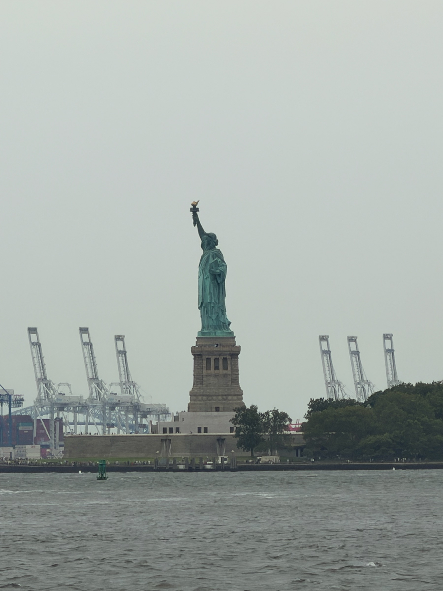
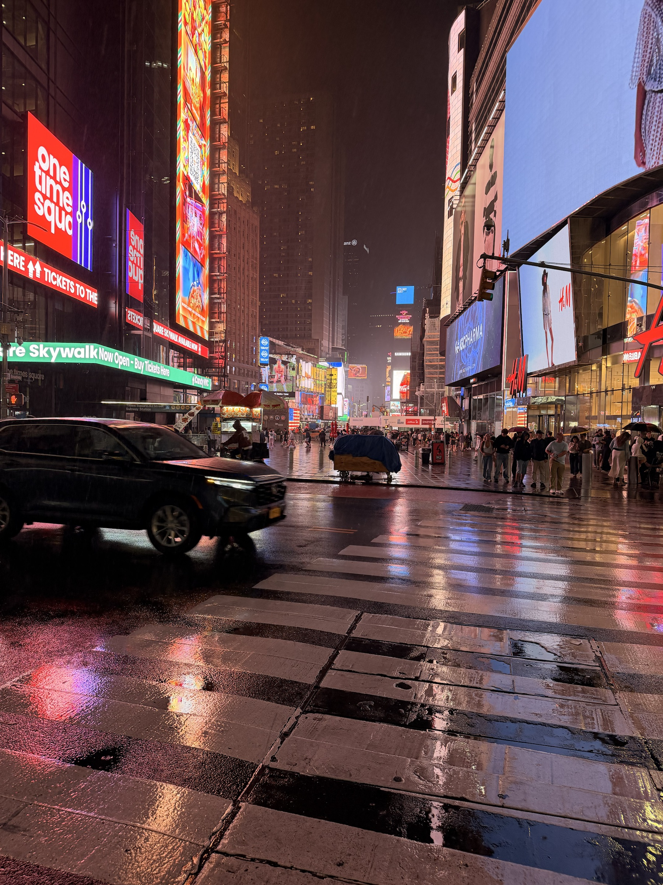
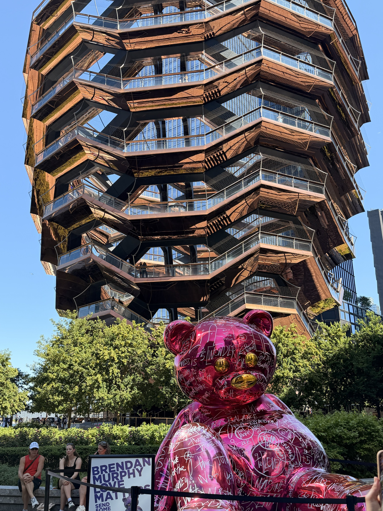
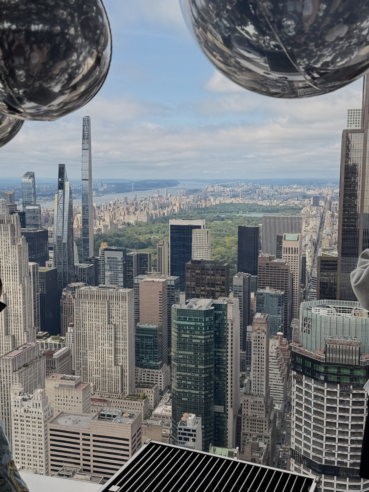
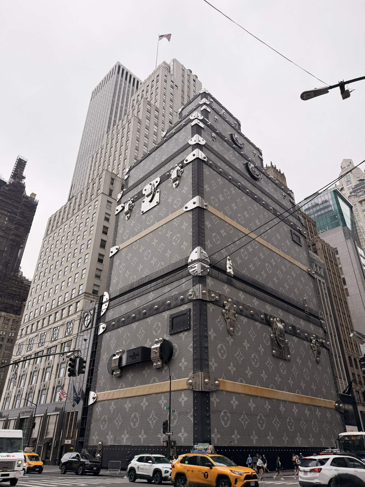
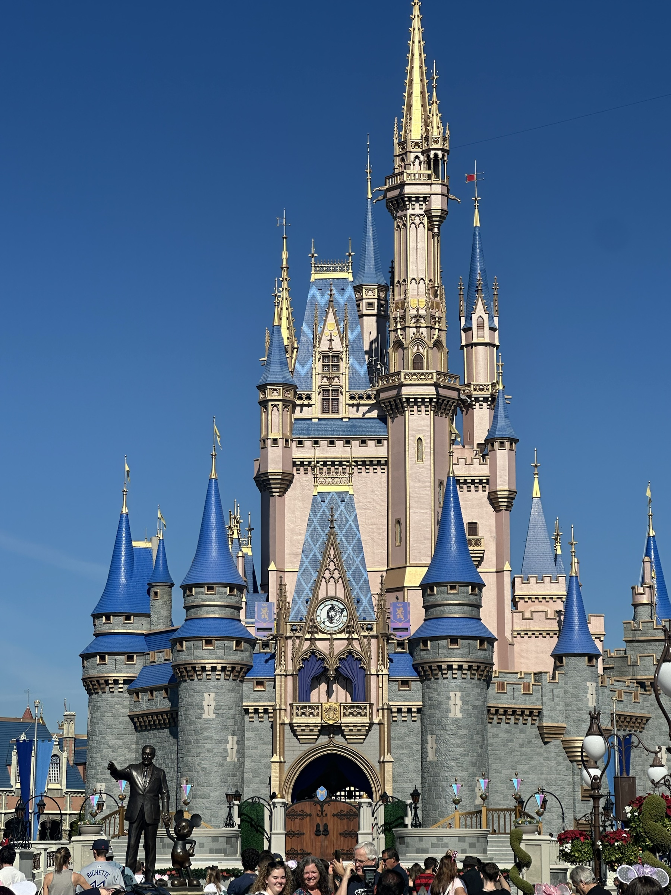

Inicio / Destino 03
Estados
Unidos
Íconos históricos y estructuras contemporáneas forman un paisaje urbano que nunca deja de transformarse.
Postales de Estados Unidos
Ciudad · Monumentos · Arquitectura

Puente de Brooklyn
Sus arcos de piedra y su trama de cables unen Manhattan y Brooklyn en una de las siluetas más famosas de Nueva York.

Grand Central Terminal
Una estación monumental donde el movimiento cotidiano convive con la elegancia de su gran vestíbulo histórico.

Estatua de la Libertad
El monumento se recorta frente al puerto como símbolo universal de Nueva York y de la llegada a la ciudad.

Times Square
Pantallas, publicidad y fachadas verticales crean una arquitectura dominada por la luz y el ritmo de la calle.

The Vessel
Una estructura contemporánea de escaleras entrelazadas que funciona como mirador y pieza escultórica urbana.

SUMMIT One Vanderbilt
La ciudad vista desde lo alto se multiplica entre reflejos, vidrio y nuevas perspectivas sobre Manhattan.

Louis Vuitton Building
Una fachada comercial que convierte el edificio en un objeto visual dentro del paisaje de la Quinta Avenida.

Castillo de Disney
Arquitectura fantástica y escenográfica inspirada en castillos europeos, convertida en emblema de Orlando.